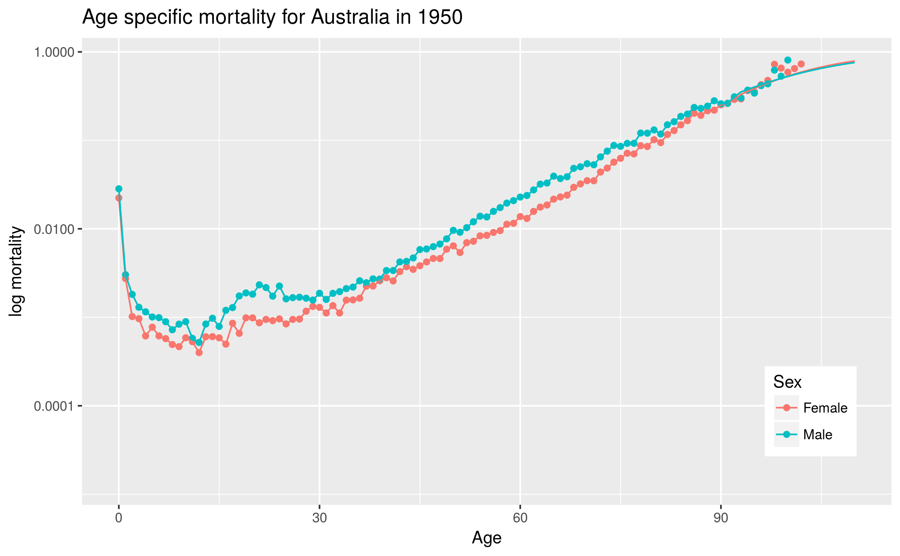

9 Death rates by age and sex
Chart of death rates by age and sex for each year (based on mltper_1x1.csv/fltper_1x1.csv located in output directory for country)
Diagnostic Charts for HMD Project - Country: Australia (AUS)
Internal plausibility - Death rates by age for each year
|  | |||||||||||
Slide Controls:
|
Delay (Seconds):
|
||||||||||
|
Go to year: 1921 1925 1930 1935 1940 1945 1950 1955 1960 1965 1970 1975 1980 1985 1990 1995 2000 2005 2010 2015 2016 |
|||||||||||